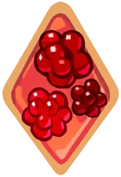
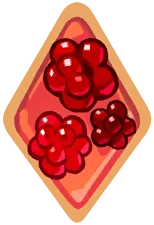

Transforms into their animal form, healing allies and granting DMG Resist, CRIT%, and CRIT DMG buffs. Cream Ferret Cookie hops on to the Cookie with the highest ATK (excluding Safeguarded Cookies), granting them the Fuzzy Scarf buff; then returns to their Cookie form and grants themselves a Debuff Resist buff. The friendly critter scurries to a Cookie whose HP is below a certain point and grants them the Precious Friend buff and Fuzzy Scarf buff. They cannot use their skill temporarily while scurrying to a Cookie. Cream Ferret Cookie is immune to damage while in their animal form.
- Team Healing: 55.0% of ATK
- Periodic Team Healing: 27.1% of ATK every 1.0 sec for 7.0 sec
- DMG Resist +10.0%, CRIT% +20.0%, CRIT DMG +25.0% for 14.0 sec; stacks up to x1
- ATK +40.0%, CRIT DMG +20.0%, Debuff Resist +30.0% for 14.0 sec; stacks up to x1
- Healing 28.9% of ATK every 2.0 sec for 14.0 sec
- Debuff Resist +20.0% on self for 7.0 sec
- Buff granted automatically to Cookies with HP under 50.0%
- HP Shield of 100.0% Max HP for 2.0 sec
- Recovers 15.0% of ATK per 1% of lost HP


 
